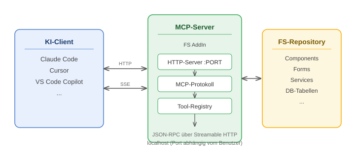

MCP-Server (Preview)
Der MCP-Server stellt eine Schnittstelle bereit, über die KI-Assistenten direkt auf das FrameworkStudio-Repository zugreifen können. Er implementiert das Model Context Protocol (MCP) und läuft als AddIn innerhalb der FrameworkStudio IDE.
Important
Der MCP-Server ist ein Preview-Feature in Version 4.8. Funktionsumfang und Schnittstellen können sich in zukünftigen Versionen ändern.
Was ermöglicht der MCP-Server?
KI-Assistenten wie Claude Code, Cursor oder GitHub Copilot können über den MCP-Server:
- Elemente auflisten und lesen — Components, Forms, Services, DB-Tabellen und alle weiteren FS-Elementtypen
- Code inspizieren — Methoden-Quellcode abrufen
- Suchen — nach Namen, im Code, nach Abhängigkeiten und in der Element-Dokumentation
- Änderungshistorie abfragen — Versionsverlauf von Elementen, Methoden und CheckIns
Architektur

Der MCP-Server wird über das Tools-Menü in der IDE gestartet und läuft als HTTP-Server auf localhost.
KI-Clients kommunizieren über das standardisierte MCP-Protokoll (JSON-RPC über Streamable HTTP mit Server-Sent Events).
Die Tool-Registry stellt alle verfügbaren Operationen bereit. Jedes Tool greift über die FS-API auf das Repository zu — im Kontext des eingeloggten Benutzers.
Port-Ermittlung
Der Port wird automatisch aus dem Windows-Benutzernamen abgeleitet:
- Aus dem Benutzernamen (lowercase) wird ein Hashwert berechnet
- Der Hashwert bestimmt den Port im Bereich 30100–35099
- Falls der ermittelte Port belegt ist, wird der nächste freie Port verwendet (bis zu 10 Versuche)
Dadurch erhält jeder Benutzer auf einer Maschine einen eigenen Port, ohne manuelle Konfiguration.
Tip
Der tatsächlich verwendete Port wird beim Start im Output-Fenster der IDE angezeigt.
Einrichtung eines KI-Clients
Für die Arbeit mit dem MCP-Server steht das Repository trade-fs-claude-workspace als Einstiegspunkt bereit. Es enthält vorkonfigurierte Skills, Domänenwissen und Setup-Skripte für Claude Code und GitHub Copilot.
Kurzanleitung
- Repository klonen —
trade-fs-claude-workspaceaus der internen Organisation herunterladen - FrameworkStudio starten und Projekt laden
- MCP-Server aktivieren — Menü: Tools → MCP-Server starten
- KI-Client starten — der MCP-Server-Endpoint ist
http://localhost:PORT/mcp(PORT aus dem Output-Fenster übernehmen)
Note
Die MCP-Konfiguration im Workspace-Repository enthält einen Standardport. Da der tatsächliche Port vom Benutzernamen abhängt, muss die URL ggf. einmalig angepasst werden.
Voraussetzungen
- FrameworkStudio 4.8 oder höher
- Aktive FS-Session mit eingeloggtem Benutzer
- Ein MCP-fähiger KI-Client (z.B. Claude Code, Cursor, VS Code mit Copilot)
Einschränkungen
- Der Server ist nur lokal erreichbar (
localhost) — kein Zugriff von außen - Pro IDE-Instanz läuft maximal ein MCP-Server
- Der Server arbeitet im Kontext des eingeloggten FS-Benutzers — Berechtigungen gelten wie in der IDE
- In der Preview-Version stehen ausschließlich lesende Operationen zur Verfügung
Bekannte Limitierungen (Preview)
Nicht unterstützte Elementtypen
DocumentationOwner wird von keinem Tool unterstützt:
- Kann nicht aufgelistet werden (
fs_list) - Kann nicht nach Namen gesucht werden (
fs_search_names) - Kann nicht abgerufen werden (
fs_get) fs_search_documentationfindet zwar den Inhalt von DocumentationOwner-Dokumentation, aber man kann einen DocumentationOwner nicht nach seinem Namen finden
AccessUnit und Datasource können über fs_list aufgelistet, aber nicht über fs_search_names nach Namen gesucht werden.
Lücken bei bestehenden Tools
| Bereich | Limitation |
|---|---|
| DB-Tabellen-Historie | fs_get_element_history findet keine DB-Tabellen, da diese über Datasources statt über Namespaces organisiert sind. |
| Code-Suche | fs_search_code durchsucht nur Component-, Form-, Service- und ModularComponent-Methoden. Code in GlobalEvent- und ServiceContract-Methoden wird nicht indiziert. |
| Dokumentationssuche | fs_search_documentation durchsucht Property-MLDoc, Form-Doku und DocumentationOwner-Doku — aber nicht die MLDoc direkt auf Component-Ebene. |
| Such-Cache | Der interne Cache für fs_search_names und fs_search_code wird nur bei einem Label-Wechsel aktualisiert. Einzelne CheckIns innerhalb desselben Labels werden erst nach einem Neustart des MCP-Servers sichtbar. |
Sicherheitshinweis
Der MCP-Server verfügt über keine Authentifizierung. Jeder Prozess auf der lokalen Maschine mit Zugriff auf den jeweiligen localhost-Port erhält uneingeschränkten Lesezugriff auf alle Repository-Daten — einschließlich Methoden-Quellcode und Datenbankschema.
Das ist für ein lokales Entwickler-Tool bewusst so gestaltet. Daraus folgt:
- Den Server nicht auf einer anderen Adresse als
localhostbetreiben - Den Server beenden wenn die IDE-Session abgeschlossen ist
- Auf gemeinsam genutzten Entwicklermaschinen beachten, dass andere lokal angemeldete Benutzer ebenfalls Zugriff haben